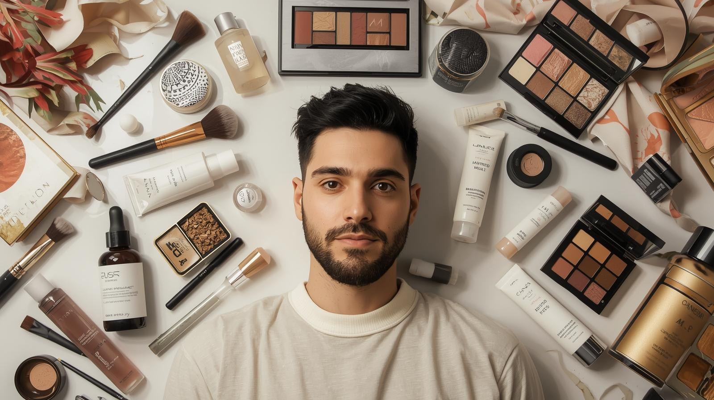
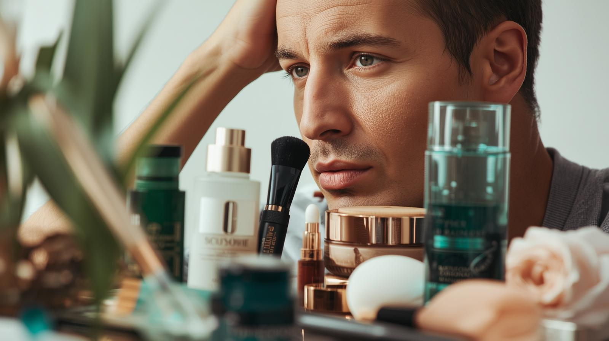

En los últimos años, el maquillaje masculino ha dejado de ser un tabú reservado a escenarios artísticos para convertirse en una herramienta cotidiana de autocuidado, estética e imagen pública. Aunque antes se asociaba exclusivamente con drag queens, teatro o televisión, hoy cada vez más hombres lo incorporan de manera natural en su rutina, tanto para eventos sociales como para redes sociales y trabajos frente a cámara. Este cambio también se refleja en la industria: la variedad de productos pensados específicamente para la piel masculina ha crecido, apostando por fórmulas más ligeras, naturales y compatibles con diferentes texturas y condiciones de piel.
La experiencia de Amparo Elizabeth López Amaya, maquilladora profesional con 16 años en producciones de Canal Caracol como Sábados Felices, confirma esta transformación. Para ella, maquillar hombres “ha sido una experiencia muy bonita”, especialmente por la diversidad de personajes y caracterizaciones en cada grabación. Sin embargo, reconoce que existen diferencias claras entre maquillar pieles masculinas y femeninas: mayor presencia de vello, texturas más marcadas y cicatrices de acné más visibles, retos que requieren productos y técnicas específicas.
En televisión, el desafío es aún mayor debido a la alta definición de las cámaras, que evidencian cualquier imperfección o exceso de producto. Amparo explica que, mientras en el pasado se utilizaban bases pesadas y acabados muy cargados, hoy la tendencia es lo natural: correctores ligeros, hidratantes, polvos traslúcidos y productos que emparejan la piel sin saturarla. “Ahora hay que hacer maquillajes sobrios y muy naturales”, afirma, destacando que las nuevas fórmulas permiten trabajar pieles masculinas sin alterar su aspecto auténtico.
Además, el maquillaje masculino no solo responde a estética o cámara, sino también a salud de la piel. Algunos hombres presentan alergias o brotes, por lo que Amparo integra bloqueadores de color y productos dermatológicos como alternativa al maquillaje tradicional. También aconseja a quienes quieren iniciarse en el maquillaje priorizar el cuidado facial: bloqueo solar, hidratación y desmaquillado responsable, antes incluso de pensar en bases o correctores.

Frente al futuro, la maquilladora es optimista: cada día llegan al mercado más productos, marcas y técnicas diseñadas para el público masculino, lo que facilita que el maquillaje deje de ser visto como un elemento exclusivamente femenino. La tendencia apunta hacia la naturalidad, la identidad y el bienestar, reafirmando que maquillarse no es una cuestión de género sino de expresión personal.